Reparación de bisagras y
carcasas de laptop en Oaxaca
Especialistas con +15 años · Entrega en 1 día hábil · Desde $650 MXN + IVA
Señales de que tu bisagra necesita atención
Si reconoces alguna de estas situaciones, actúa antes de que el daño crezca.
La tapa no cierra correctamente
Escuchas un clic o crack al abrir la pantalla
La carcasa está agrietada o rota alrededor de la bisagra
La pantalla se tambalea al estar abierta
Ves cables internos expuestos cerca de la bisagra
Hay plástico roto que raspa la mesa
Si notas alguna de estas señales, no lo dejes pasar. Una bisagra dañada ejerce tensión sobre el cable de pantalla — si el cable se rompe, el costo de reparación sube considerablemente.
Reparación de Bisagras de Laptop en Oaxaca
Cuatro pasos claros, sin complicaciones.
Traes el equipo al taller
Sin cita. Lunes a viernes 9:30–20:00, sábados 10:00–15:00.
Diagnóstico — $150 MXN + IVA
Revisamos el tipo de daño y te damos presupuesto exacto antes de tocar nada. El costo del diagnóstico se descuenta si autorizas la reparación.
Reparación con resinas profesionales
Usamos resinas y materiales de alta resistencia. No clavos, no pegamento casero.
Entrega en 1 día hábil
Retiras tu equipo al día siguiente, con garantía de 35 días en mano de obra.
Desde $650 MXN + IVA · El precio exacto depende del modelo
Algunos trabajos de bisagras que hemos reparado
Daños reales, resultados reales.
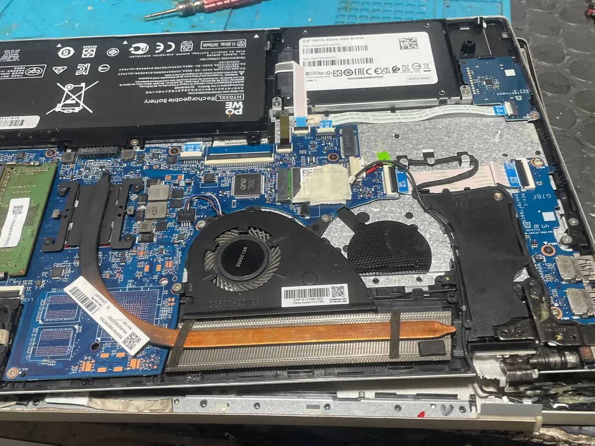
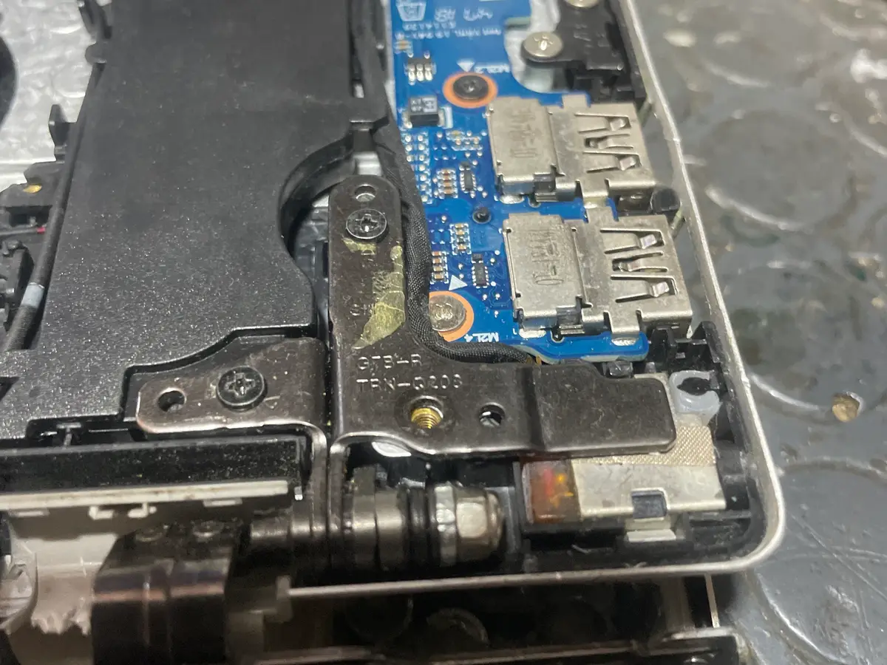
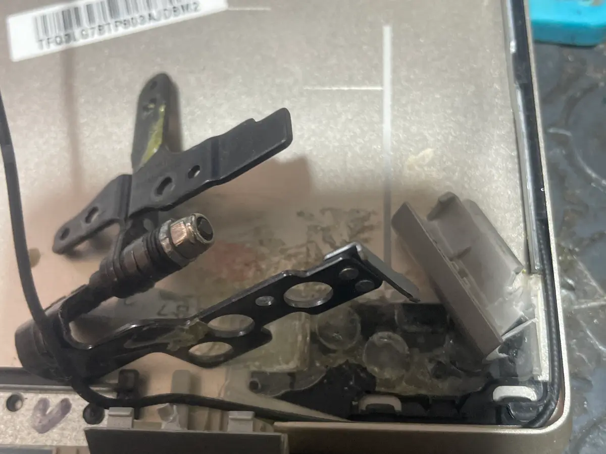
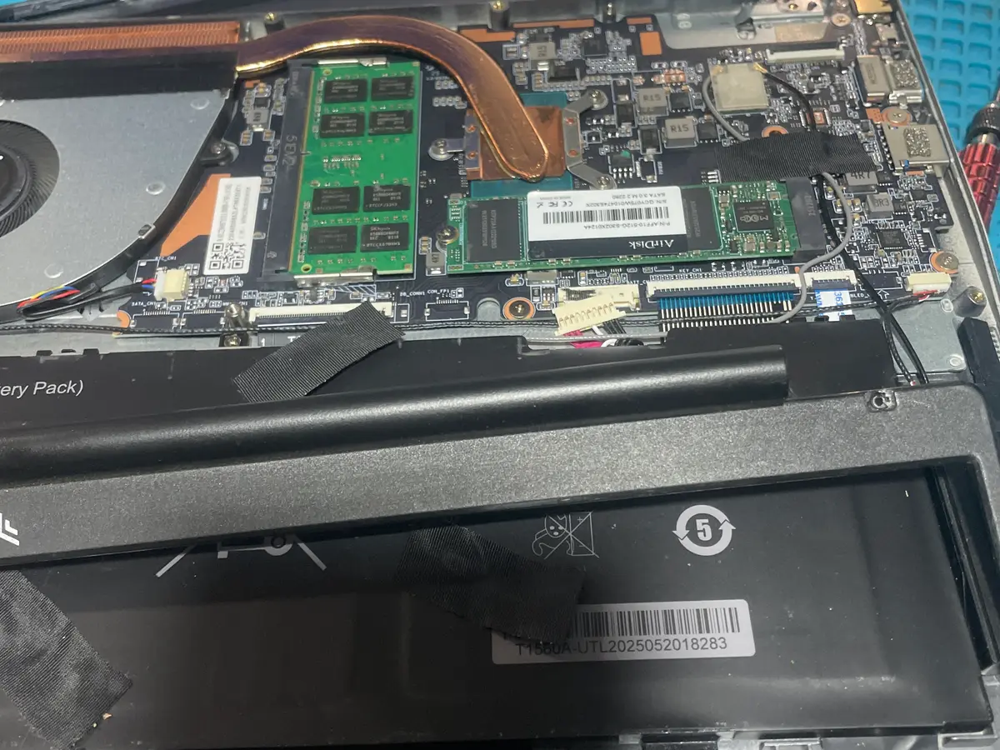
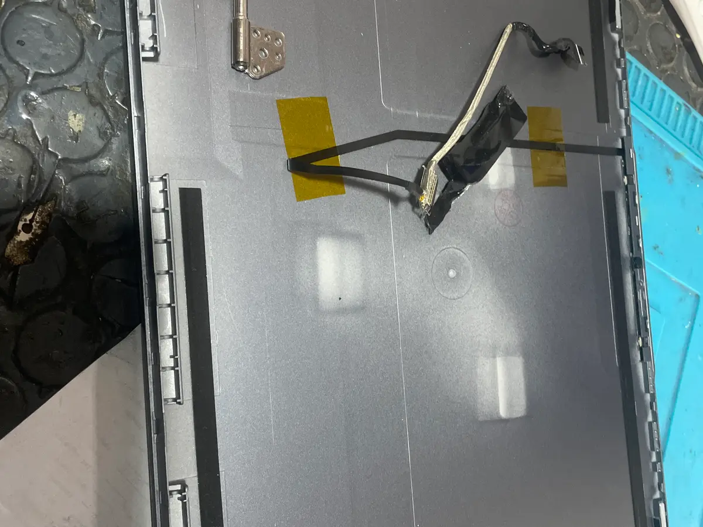
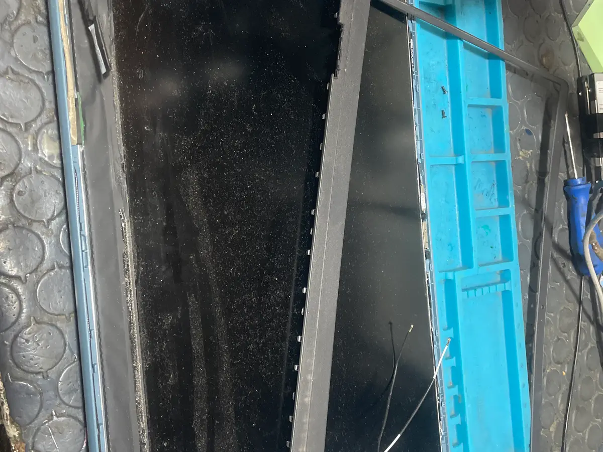
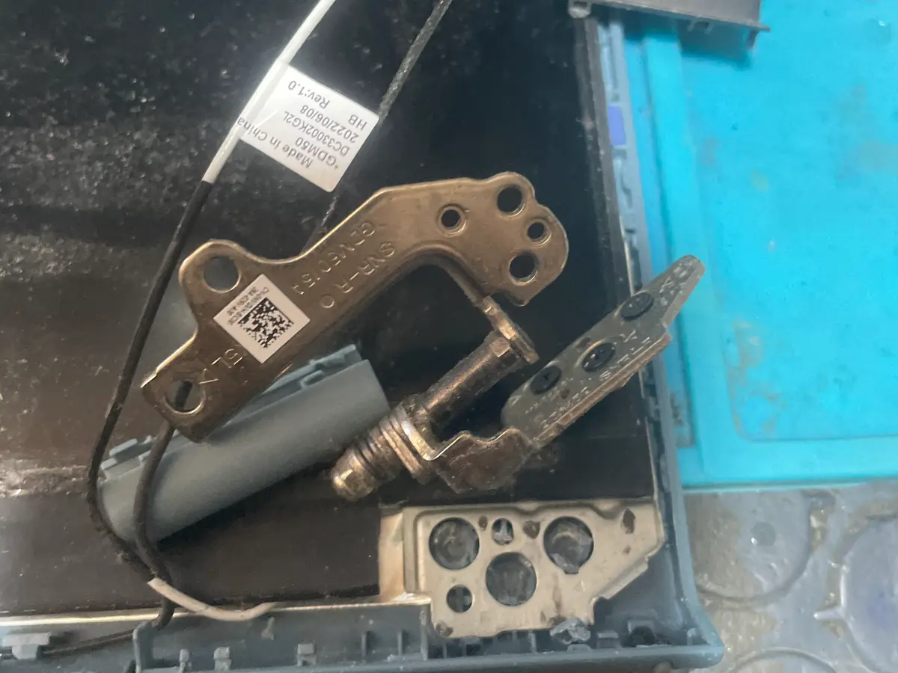
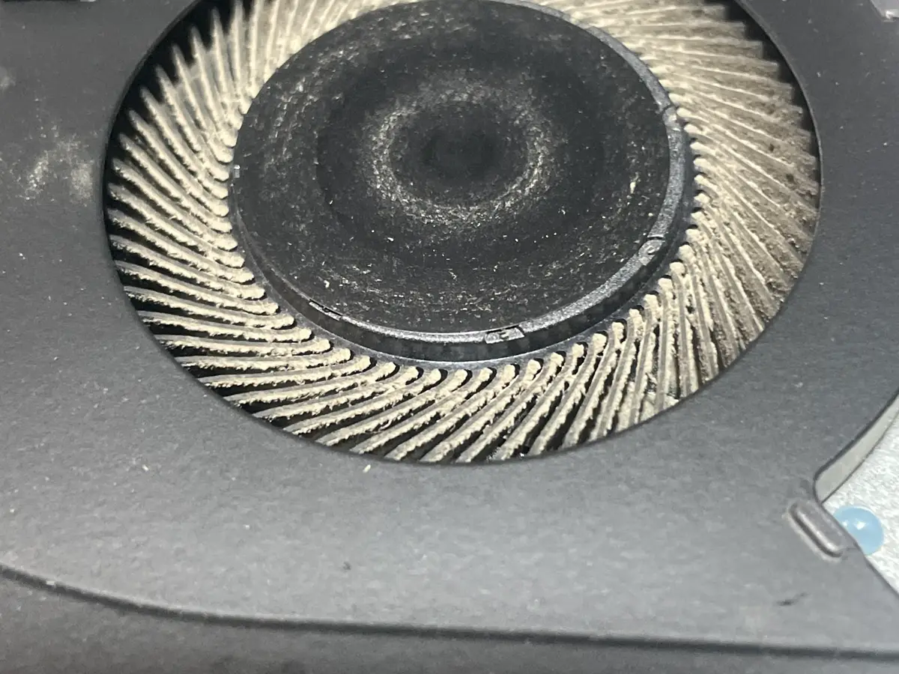
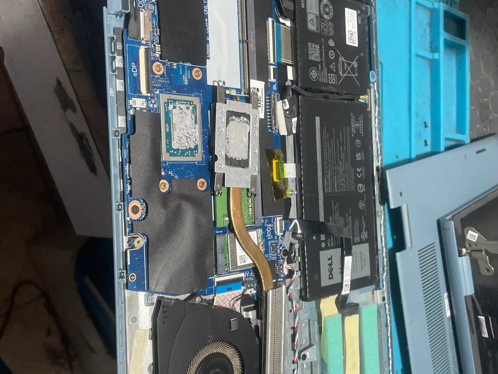
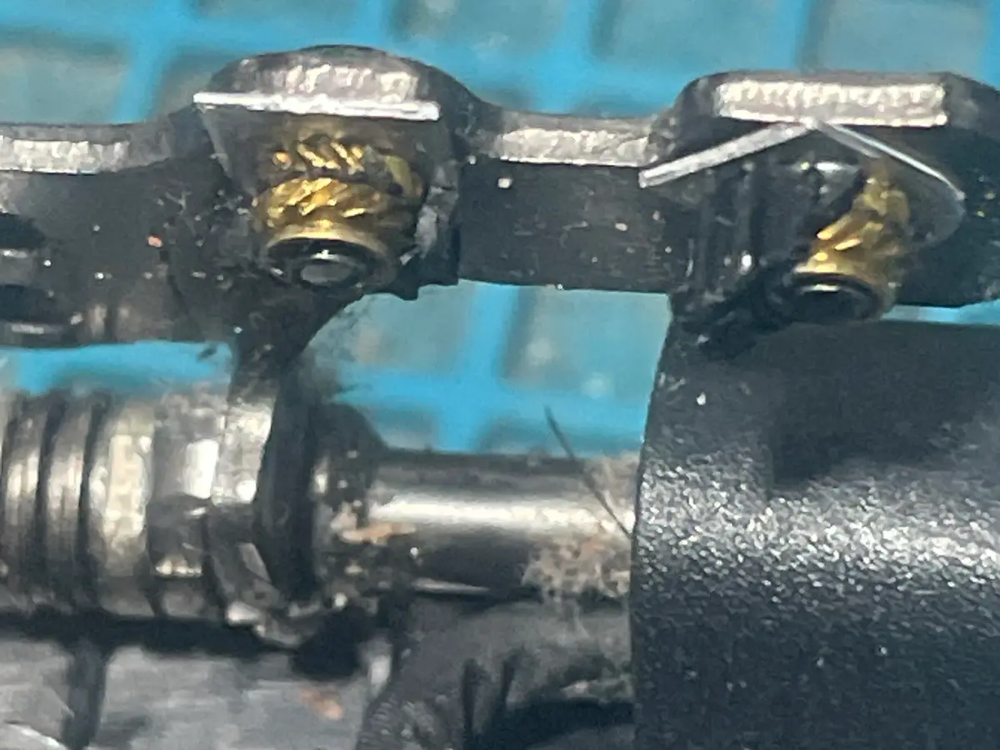
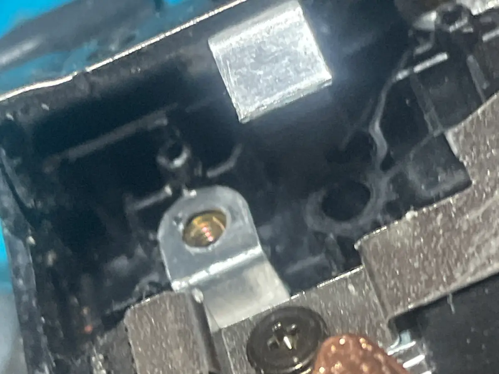
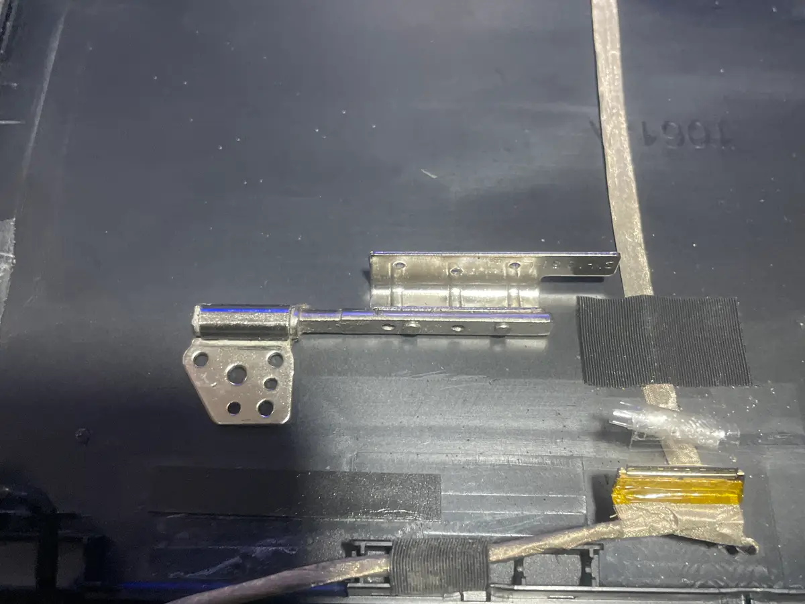
¿Tienes el mismo modelo? Escríbenos, es muy probable que ya hayamos reparado uno igual.
Cotizar mi bisagra →Precios claros, sin sorpresas
Sabes cuánto pagarás antes de que empecemos.
| Concepto | Detalle |
|---|---|
| Diagnóstico Se descuenta si autorizas la reparación | $150 MXN + IVA |
| Reparación de bisagra / carcasa | desde $650 MXN + IVA |
| Tiempo de entrega † Ver nota al pie | 1 día hábil |
| Garantía | 35 días en mano de obra |
* El diagnóstico ($150 MXN + IVA) se descuenta del total si autorizas la reparación.
† El tiempo de entrega de 1 día hábil aplica una vez que: (1) se ha realizado el diagnóstico, (2) el presupuesto ha sido aceptado y pagado, y (3) el técnico ha confirmado que el servicio es express y no requiere trabajo adicional. Algunos casos pueden requerir más tiempo.
El precio varía según el modelo. Tráenos el equipo o mándanos una foto por WhatsApp para un estimado aproximado.
Preguntas frecuentes sobre reparación de bisagras
Todo lo que necesitas saber antes de traer tu laptop.
La reparación de bisagras y carcasas tiene un costo desde $650 MXN + IVA. El precio final depende del modelo y el grado del daño. El diagnóstico visual es sin costo — tráenos el equipo y te damos un presupuesto exacto antes de comenzar.
La mayoría de las reparaciones de bisagra las entregamos en 1 día hábil. Usamos resinas de curado profesionales que requieren tiempo de fraguado — por eso no hacemos reparaciones express en el momento. La calidad del resultado lo vale.
No. La reparación de bisagras y carcasas es trabajo físico en la estructura de la laptop — no tocamos el disco duro ni el software. Tus archivos, fotos y programas quedan exactamente igual.
La bisagra dañada ejerce tensión constante sobre el cable de la pantalla cada vez que abres o cierras la tapa. Con el tiempo, ese cable se puede cortar, lo que significa que la pantalla deja de funcionar. Reparar la bisagra a tiempo evita un gasto mucho mayor.
Trabajamos con HP, Dell, Lenovo, Asus, Acer, Toshiba, Samsung, Sony y la mayoría de las marcas del mercado. No reparamos equipos Apple/MacBook.
Sí. Puedes mandarnos fotos del daño por WhatsApp y te damos un estimado aproximado. Eso sí, el precio exacto y la garantía solo los podemos confirmar con el equipo en mano.
¿Tienes la bisagra o carcasa de tu laptop dañada?
Tráenosla al taller. Diagnóstico desde $150 MXN + IVA —
se descuenta si autorizas la reparación.
O visítanos: Leandro Valle 222, Centro, Oaxaca · Lun–Vie 9:30–20:00 · Sáb 10:00–15:00
También reparamos
Más servicios especializados en Cise Laptop.
Actualización SSD y RAM
Haz tu equipo más rápido
Reparación de impresoras
Todas las marcas
Reparación a nivel componente
Placa base y más
¿Otro problema? Escríbenos — si no lo hacemos, te decimos honestamente.
Visítanos en el taller
Dirección
Calle Leandro Valle 222, Centro, Oaxaca
(antes de la marisquería La RED,
entre Hidalgo y Guerrero, local azul)
Horarios
- Lunes – Viernes9:30 – 20:00
- Sábados10:00 – 15:00
- DomingosCerrado
Métodos de pago
- Efectivo
- Transferencia bancaria (SPEI)
- No aceptamos tarjeta